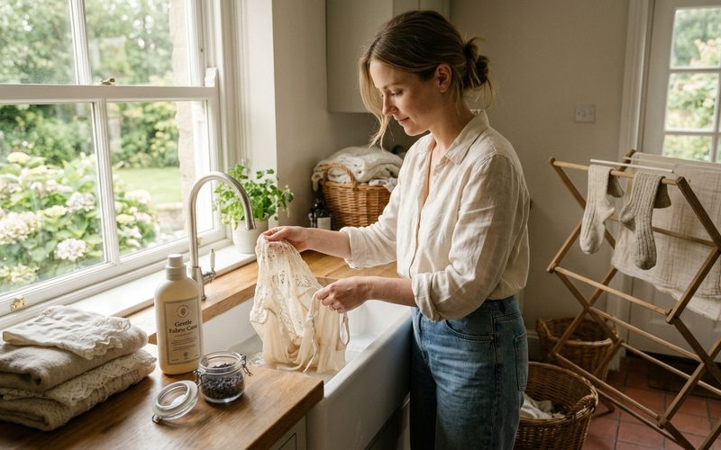

Uma peça de brechó bem cuidada pode durar décadas. Não é exagero, é a realidade de tecidos que sobreviveram a uma ou mais donas justamente porque alguém, em algum momento, soube cuidar deles com atenção. Quando você leva para casa uma peça garimpada no Outra Vez, está assumindo essa responsabilidade de guardiã: garantir que a história continue por mais alguns capítulos.
O cuidado com roupas de segunda mão começa antes mesmo da primeira lavagem. Comece pelas etiquetas de composição e instruções de lavagem. Se a etiqueta foi removida, o que acontece com peças mais antigas, você pode identificar o tecido pelo toque e comportamento. Seda e viscose são escorregadias e frias ao tato. Lã tem textura lanosa e levemente picante. Linho amassa com facilidade e tem um caimento mais rígido. Algodão é macio, absorvente e relativamente robusto.
A primeira lavagem de uma peça de brechó merece atenção redobrada. Independentemente do estado aparente da peça, é recomendável lavar antes do primeiro uso, mas de forma delicada. Para tecidos naturais como seda, lã e linho, a lavagem à mão com água fria e sabão neutro é sempre a escolha mais segura. Mergulhe a peça sem esfregar, deixe agir por alguns minutos e enxágue com cuidado, sem torcer. Para secar, pressione delicadamente contra uma toalha e estenda à sombra na horizontal, nunca pendurada (o peso da água pode deformar o caimento).
Algodão e misturas sintéticas são mais tolerantes, mas ainda assim evite água quente em cores saturadas ou escuras, a perda de cor é um risco real em peças mais antigas que não tiveram processo de fixação moderno. Uma dica prática: acrescente meio copo de vinagre branco à água de enxague para ajudar a fixar a cor e eliminar odores residuais sem agredir o tecido.
O modo como você guarda as roupas define muito mais do que imaginamos. Peças de seda e viscose devem ser dobradas, não penduradas, o peso próprio do tecido, ao longo do tempo, cria deformações nas alças e ombros. Blazers e casacos estruturados, ao contrário, precisam de cabides largos e acolchoados que respeitem a forma dos ombros. Nunca use arames de lavanderia para peças estruturadas.
A umidade é inimiga silenciosa do guarda-roupa. Em Belo Horizonte, onde o clima pode ser úmido em determinadas épocas, é prudente deixar sachês de lavanda ou cedro entre as peças, eles repelem traças e absorvem umidade sem deixar cheiro artificial. Sacos de pano (não de plástico) são ideais para peças que ficam guardadas por mais tempo, como casacos de entressafra.
Ter uma costureira de confiança é um dos melhores investimentos que uma garimpadora pode fazer. Um botão trocado, uma bainha refeita, um zíper substituído, esses pequenos reparos transformam o estado de uma peça completamente. No Savassi, há ateliês especializados em restauração de roupas que trabalham com peças delicadas e antigas com o mesmo cuidado de um restaurador de obras de arte.
Cuidar bem das suas peças de brechó é, em essência, um ato de respeito pelo ciclo que elas representam. Cada lavagem cuidadosa, cada dobra pensada, cada reparo pontual é que aquela peça tem valor, não porque foi cara, mas porque tem história. E histórias merecem ser preservadas.